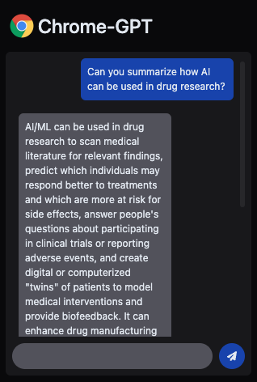
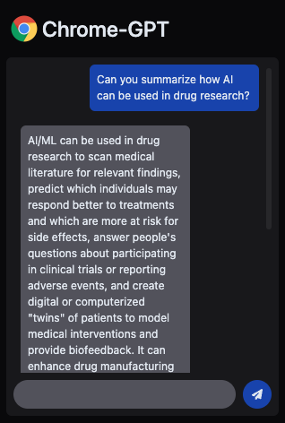

Chrome-GPT
Summary
Chat-GPT is limited by the information that it is trained on. Models like GPT-3.5 are only trained on data until 2021, now missing 2 years of new information. Chrome-GPT tries to break this barrier through prompt engineering and context injection.
The extension works by transforming all paragraphs on a webpage into vector embeddings and then calculating vector cosine similarity with your prompt, to inject the most relevant information.
Made in collaboration with Matthew Leung and powered by OpenAI API.
Samples
 
